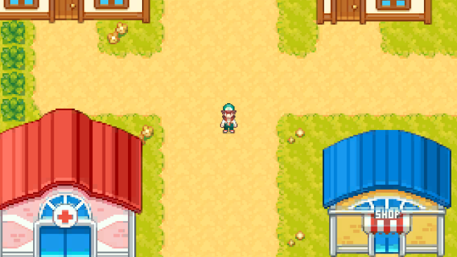
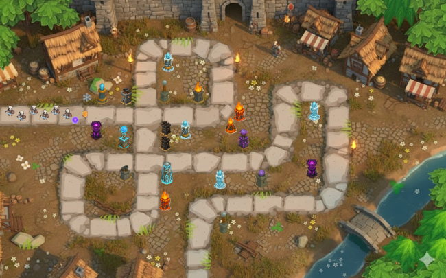
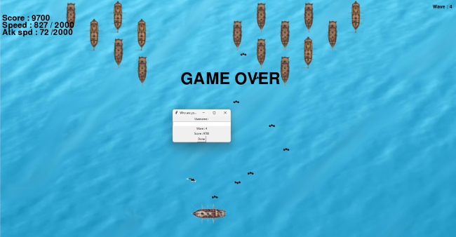

Électronique Programmation Réseautique

Description : Dans le cadre du cours de veille technologique, j'ai décidé de concevoir une voiture téléguidée contrôlée par Wi-Fi. Je la réalise à partir de zéro : j'ai sélectionné et acheté les diverses pièces nécessaires pour l'assembler. Je développe également un logiciel en C++ pour faire communiquer une manette et la voiture entre elles.
Objectifs : Concevoir et programmer une voiture téléguidée fonctionnelle de A à Z.
Résultats : L'assemblage matériel est en cours de finalisation, et la partie logicielle (le code de communication et de contrôle) est terminée.
Apprentissages : J'ai dû apprendre le langage C++ pour programmer le microcontrôleur de la voiture, ainsi que les bases des circuits électriques pour comprendre comment brancher et alimenter les différentes pièces entre elles.
🔗 Voir le projet sur GitHub
Cybersécurité Réseau

Description : Je devais effectuer des recherches publiques sur une entreprise choisie, sans jamais interagir directement avec ses systèmes — c'est-à-dire sans effectuer de scans actifs ni tenter d'intrusion sur leur site web.
Objectifs : Cartographier l'infrastructure web et physique publique afin d'identifier d'éventuelles failles ou fuites d'informations pouvant exposer des données sensibles.
Résultats : L'infrastructure de l'entreprise choisie s'est révélée très bien sécurisée ; les seules informations sensibles exposées publiquement concernaient les adresses personnelles de certains dirigeants.
Apprentissages : Suivre une méthodologie d'enquête stricte et légale, et maîtriser différents outils de renseignement de sources ouvertes (OSINT).
🔗 Voir le projet sur GitHub
Programmation Jeu vidéo Pokémon-like

Description : J'ai réalisé un jeu vidéo qui s'inspire de Pokémon en utilisant Unity, mettant en œuvre des concepts de programmation orientée objet avec l'aide d'un collègue de classe.
Objectifs : Réaliser un jeu vidéo d'une durée de 5 minutes qui démontre la compréhension d'Unity et de la programmation orientée objet.
Résultats : Le jeu fonctionne correctement et démontre une bonne maîtrise des concepts de programmation orientée objet.
Apprentissages : Approfondir mes connaissances en programmation orientée objet et dans l'utilisation du moteur Unity.
🔗 Voir le projet sur GitHub
Programmation Jeu vidéo Tower defense

Description : J'ai réalisé un jeu vidéo qui s'inspire des jeux de type Tower Defense en utilisant Microsoft Forms, mettant en œuvre des concepts de programmation orientée objet avec l'aide d'un collègue de classe.
Objectifs : Réaliser un jeu à l'aide de Microsoft Forms qui est connecté à une base de données.
Résultats : Le jeu est fonctionnel et démontre une bonne maîtrise des concepts de programmation orientée objet et de la gestion des données.
Apprentissages : Approfondir mes connaissances en programmation orientée objet, en utilisation de Microsoft Forms et en gestion des données.
🔗 Voir le projet sur GitHub
Programmation Jeu vidéo Space Invaders

Description : J'ai réalisé un jeu vidéo qui s'inspire de Space Invaders, codé en Python à l'aide de la bibliothèque Pygame.
Objectifs : Réaliser un premier jeu complet à l'aide du langage Python.
Résultats : Un jeu jouable intégrant le déplacement, les tirs, les collisions et la gestion des points.
Apprentissages : Acquérir les bases de la programmation en Python et comprendre la logique d'une boucle de jeu avec Pygame.
🔗 Voir le projet sur GitHub